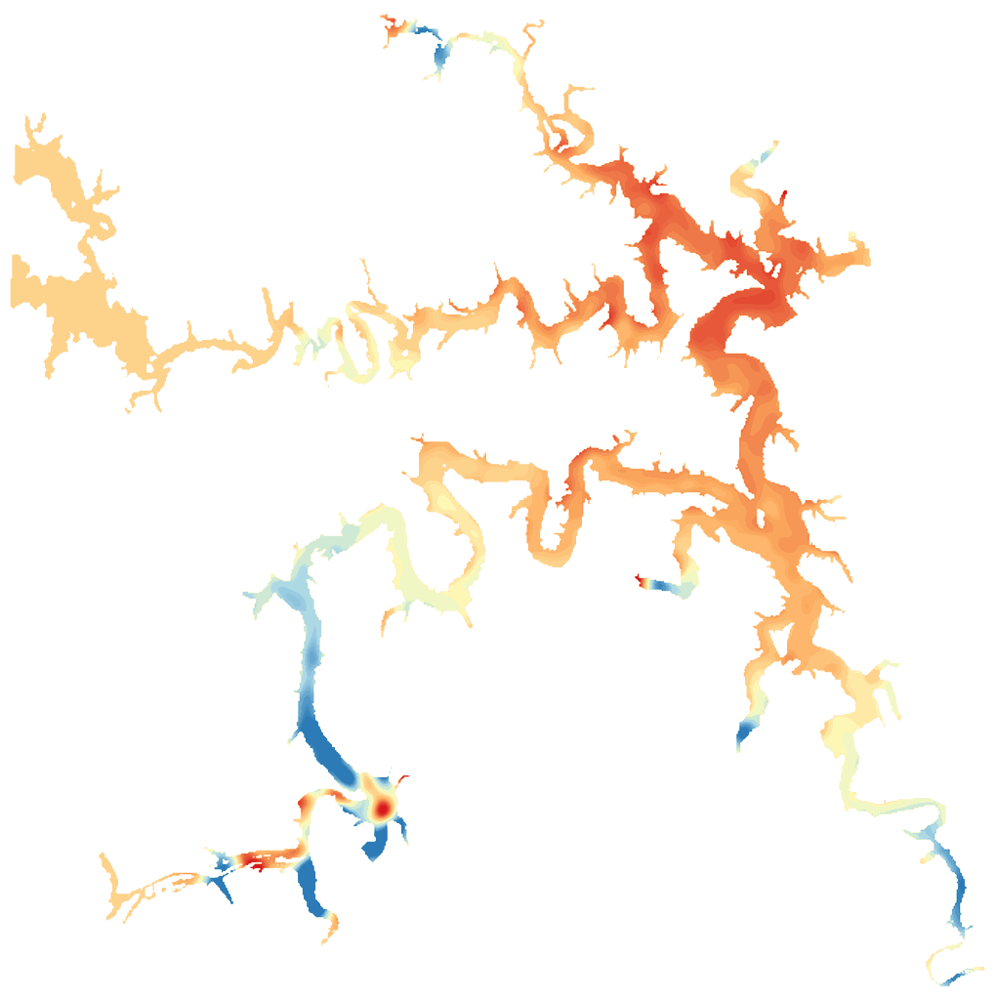

LakeScope › MO
Truman Lake today
Updated 2026-11-21 - Atlas Labs
Slightly murky, 59°F water, level steady, near normal, calm this morning.
Water level
705.58 ft
USGS gauge 06922440 - 2026-11-21
7-day trend: steady (+0.13 ft). Compared with normal for this date: -0.6 ft (same weeks, 2016-2025).
Water clarity and algae
Slightly murky Last clear view: about a week ago.
Surface temperature
59°F
seen from space on 2026-11-19

Ice
Open - 0% ice cover
Estimate from weather and satellite, not a measurement. Check the ice yourself before going on it.
Weather, next 3 days
| Day | Sky | High / low | Wind | Rain |
|---|---|---|---|---|
| Saturday | Sunny | 73 / 48°F | 12 mph S | 1% |
| Sunday | Rain Showers Likely then Mostly Cloudy | 55 / 30°F | 15 mph N | 69% |
| Monday | Sunny | 48 / 25°F | 6 mph NE | 0% |
Sunrise 07:01 - sunset 16:57 - Waxing gibbous. National Weather Service.
Get the LakeScope app: alerts and the 3-D view of Truman Lake